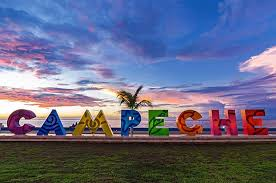
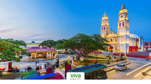
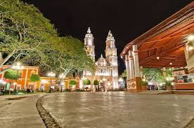
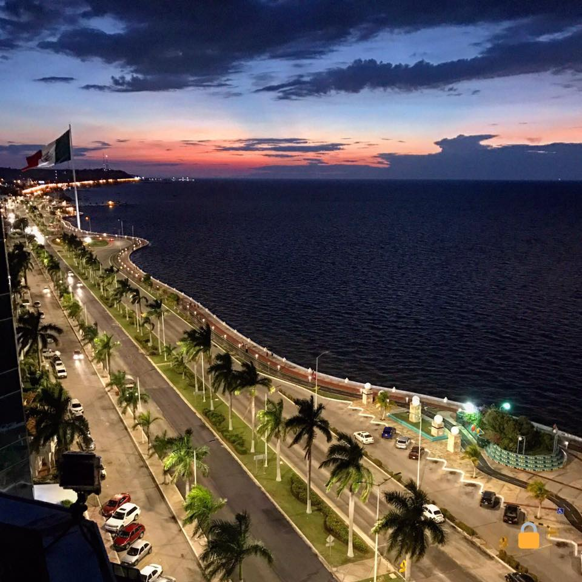
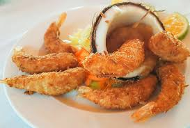
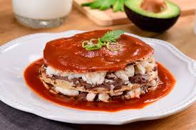
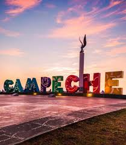
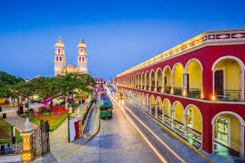
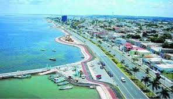
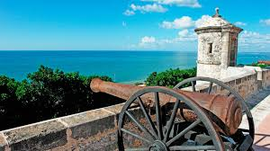

Información general


San Francisco de Campeche es conocida por su centro histórico amurallado, declarado Patrimonio de la Humanidad.
Su arquitectura colonial y calles coloridas la convierten en un destino único.
Campeche es una ciudad colonial con murallas, colores vibrantes y una gran riqueza cultural en el sureste de México.


San Francisco de Campeche es conocida por su centro histórico amurallado, declarado Patrimonio de la Humanidad.
Su arquitectura colonial y calles coloridas la convierten en un destino único.

Defensas históricas de la ciudad.

Ideal para caminar junto al mar.


La gastronomía de Campeche incluye pan de cazón, mariscos y platillos tradicionales mayas.
Las festividades y tradiciones reflejan la mezcla de culturas.




Campeche es un destino ideal para quienes buscan historia, tranquilidad y cultura en un solo lugar.